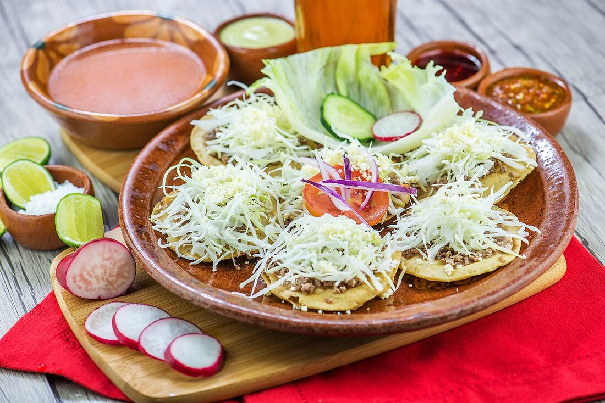
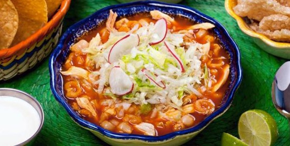

La gastronomía de Colima es famosa por sus sopitos, un clásico de la cocina local, y su pozole seco, un platillo único que se prepara sin caldo. También destacan los dulces como cocadas, alfajores, borrachitos y palanquetas. En cuanto a bebidas, la tuba, hecha con miel de palma, es una opción refrescante. Otros platillos típicos incluyen el tatemado, la pepena, el ponche de granada, y los tamales de ceniza.